DepthVLM serves as a unified foundation model for both low-level dense geometry prediction and high-level multimodal understanding, while achieving substantially faster inference compared with existing VLM-based approaches such as DepthLM and Youtu-VL.
Vision–Language Models (VLMs) excel at 2D tasks such as grounding and captioning, yet remain limited in 3D understanding. A key limitation is their text-only supervision paradigm, which under-constrains fine-grained visual perception and prevents the recovery of dense geometry. Prior methods either distill geometry from external vision models, introducing error accumulation, or enable direct prediction with inefficient per-pixel query or coarse token-level outputs. In this paper, we propose DepthVLM, a simple yet effective framework that transforms a single VLM into a native dense geometry predictor while preserving its multimodal capability. By attaching a lightweight depth head to the LLM backbone and training under a unified vision–text supervision paradigm with a two-stage schedule, DepthVLM generates full-resolution depth maps alongside language outputs in a single forward pass. We further introduce a unified indoor–outdoor metric depth benchmark in a VLM-compatible format. Experiments show that DepthVLM significantly outperforms existing VLMs with higher inference efficiency, surpasses leading pure vision models, and improves complex 3D spatial reasoning, moving toward a truly unified foundation model. All code and checkpoints will be publicly released.
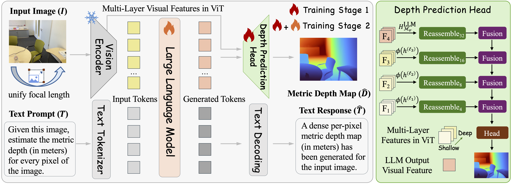
Overview of our proposed DepthVLM. We extend the standard VLM architecture with a lightweight DPT-style depth prediction head, and adopt a two-stage training strategy to preserve the backbone's general VQA capability. In addition, input images are normalized to a unified focal length, eliminating camera-induced ambiguity across heterogeneous dataset domains.
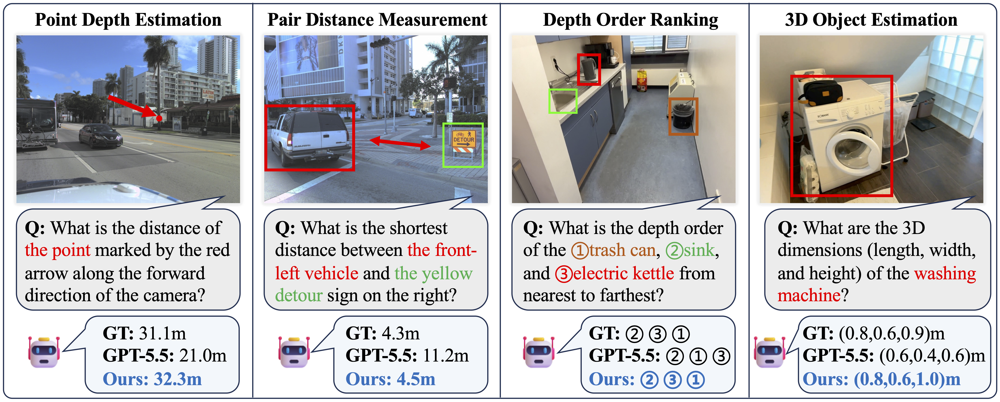
Qualitative results on more complex 3D tasks. Beyond dense metric depth estimation, our model further supports a variety of downstream 3D reasoning tasks, demonstrating that native dense geometry prediction serves as a solid foundation for high-level spatial reasoning in VLMs.
Drag to rotate point clouds. Compare point cloud quality across methods.
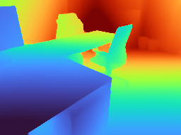
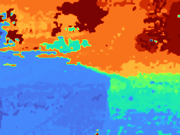
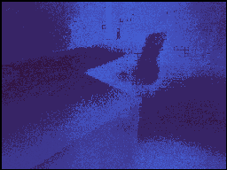
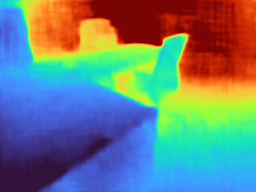
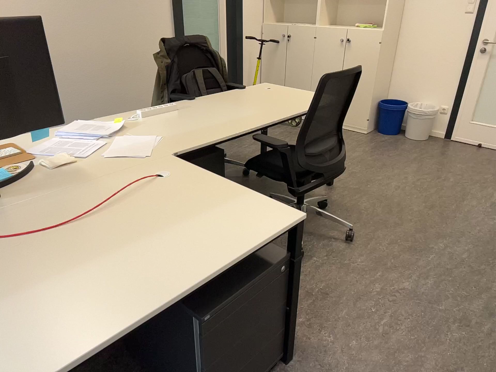
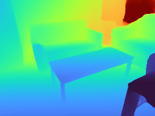
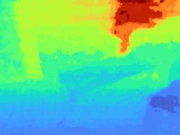
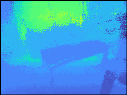
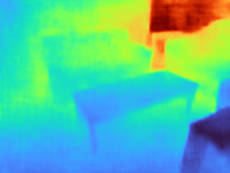
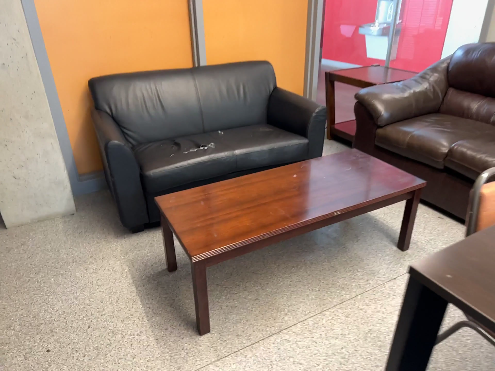
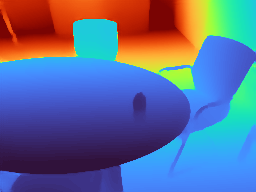
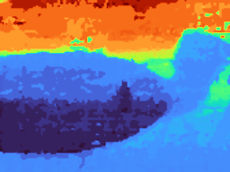
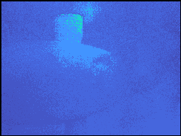
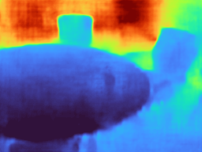
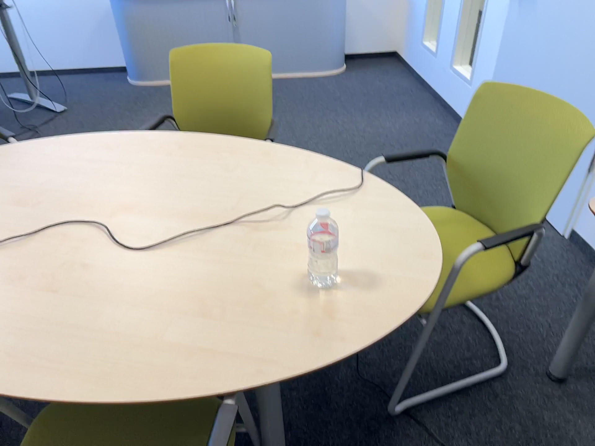
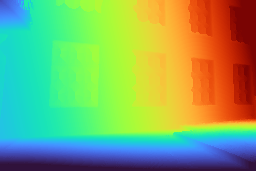
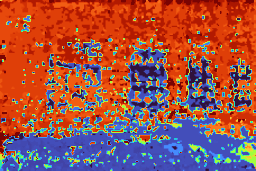
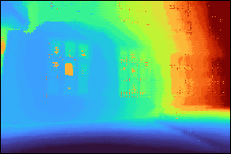
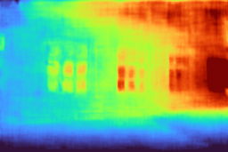
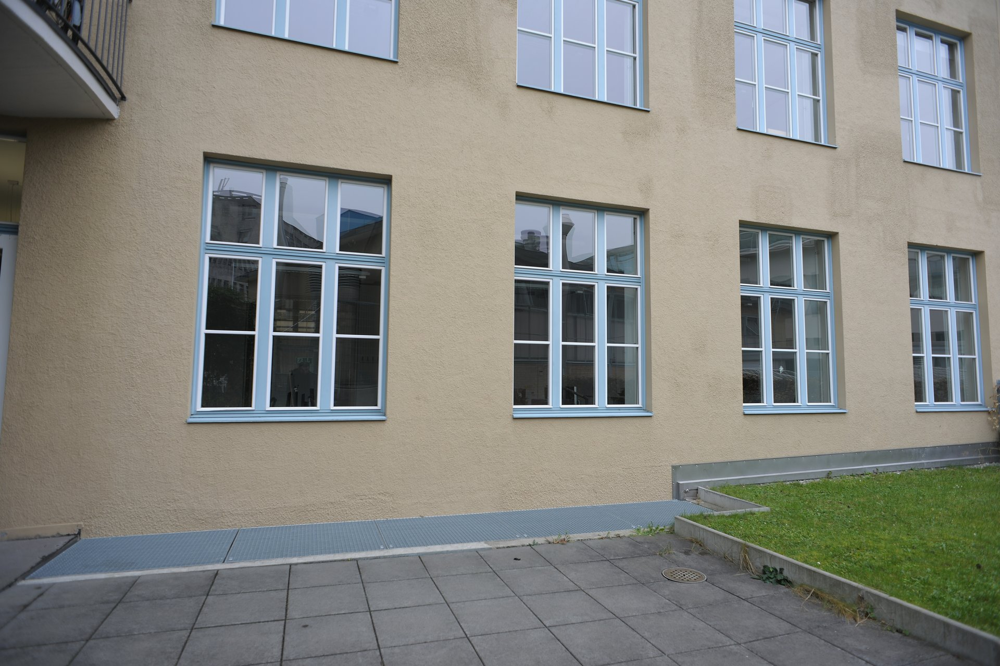
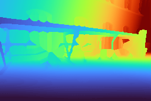
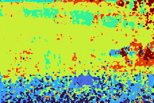
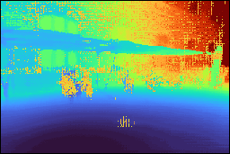
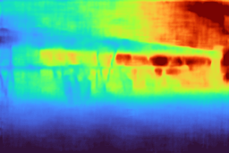
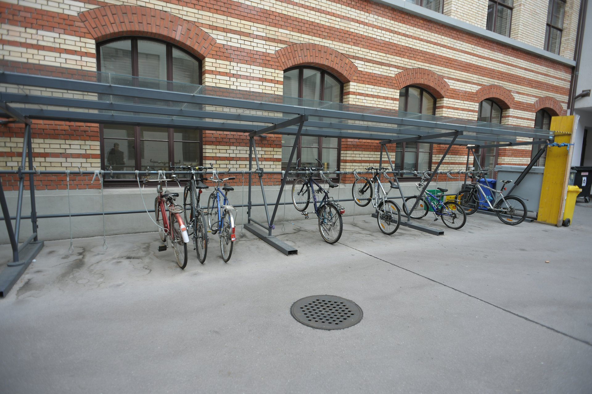
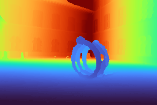
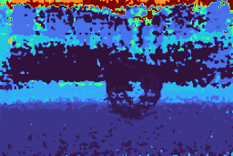
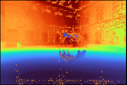
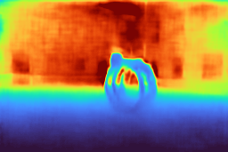
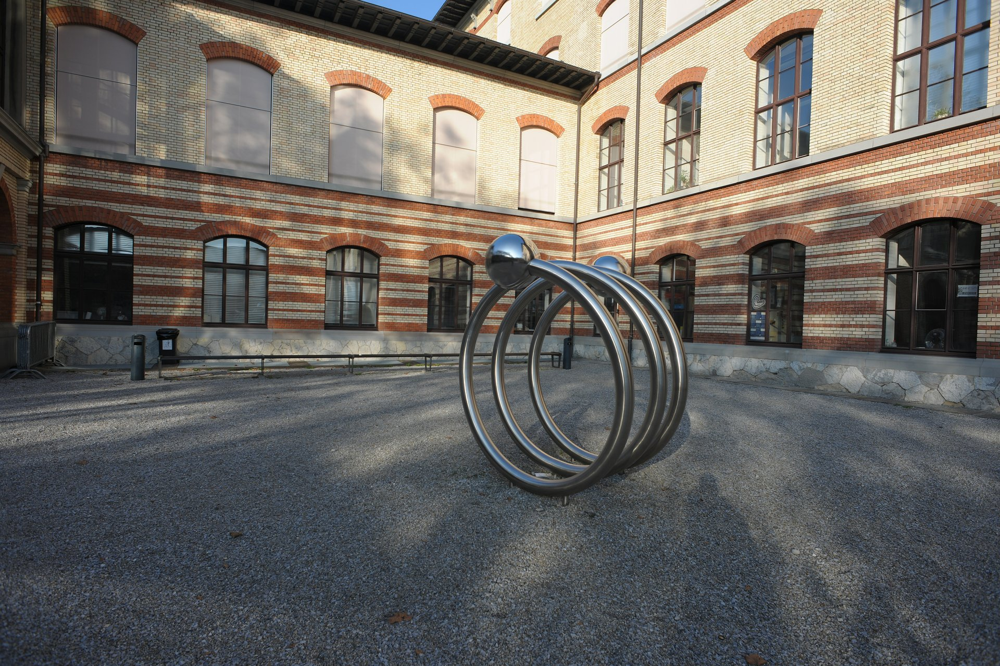
Comparison with existing VLMs on metric depth estimation across diverse indoor and outdoor datasets. For VLMs not explicitly trained for this task, we adopt the prompting strategy proposed in DepthLM to elicit their best performance. Even the state-of-the-art GPT-5.5 attains a δ₁ of only around 0.4, highlighting the difficulty of the task for prevailing VLMs. Bold and underlined values denote the best and second-best results, respectively.
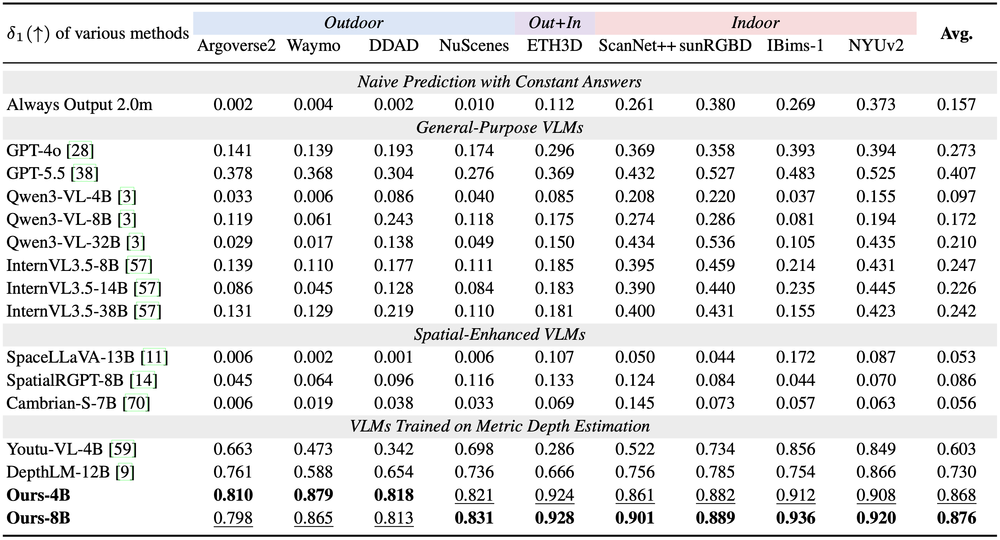
Comparison with specialized pure vision models on metric depth estimation across indoor and outdoor datasets. Despite being a unified VLM that preserves strong multimodal capabilities, our method can outperform state-of-the-art pure vision specialists, demonstrating that dense geometry prediction can emerge natively within a single vision-language foundation model.
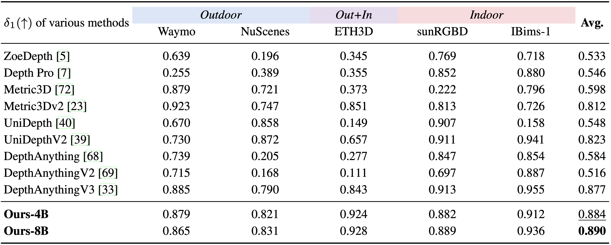
Evaluation on broad visual benchmarks, covering general VQA, document understanding, multi-image reasoning, counting, and hallucination. Empowered by our lightweight depth head and two-stage training strategy, our method natively gains the ability to generate dense geometry without sacrificing the general multimodal capability of the underlying VLM, in sharp contrast to prior text-heavy supervision approach that typically incurs substantial capability degradation.
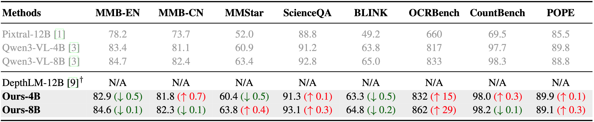
@article{yu2026unlocking,
title={Unlocking Dense Metric Depth Estimation in VLMs},
author={Hanxun Yu and Xuan Qu and Yuxin Wang and Jianke Zhu and Lei Ke},
journal={arXiv preprint arXiv:2605.15876},
year={2026}
}If you find our work useful in your research, please consider citing our paper and giving us a ⭐ on GitHub. Thank you!